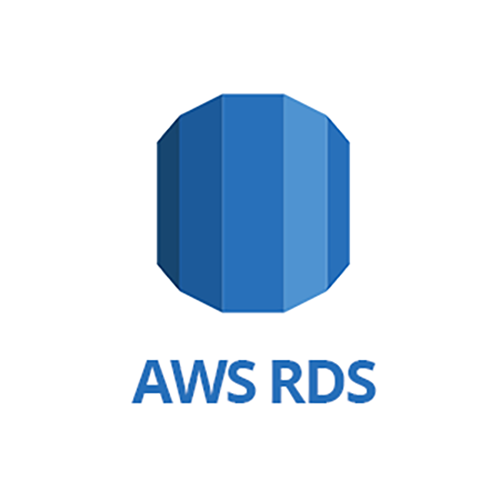
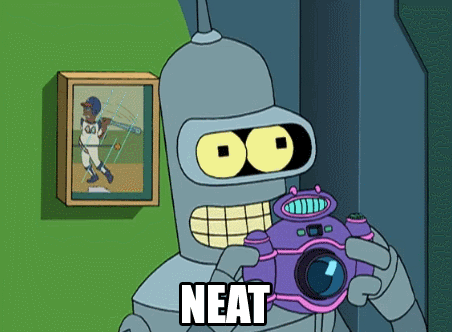
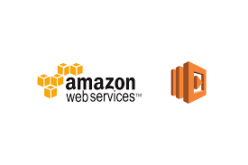

TL;DR
Recently AWS announced new feature to stop/start your RDS instances. This is something I have been looking forward to for a long while..
AWS RDS stop/start
 Companies I have worked for in the past have scaled down their RDS instances for lower end envs to save costs. Now you can schedule to stop/start, sweet!
The stop/start feature is available for database instances running in a Single-AZ deployment
This may not suit your needs but if you have multiple RDS instances running in lower end envs in a single A-Z; this potentially could save you $100s if not $1000s per annum..
RDS Pricing example
Lets take a medium sized RDS instance db.m4.xlarge (4CPU and 16GB RAM) in Sydney region for MySQL engine costs $0.492 per hour
Now if we use the calculator,
usage running 24/7, costs on average $360.15 per month
Now if we only had that running business hours (9 hrs a day MON-FRI) , talking on average $92.99.
Thats a cost saving of $267.16. That is just for one instance per month/ OR $3,205.92 per annum!!!!!
What if you were working in a large enterprise with 10s or 100s of RDS instances... 😉

So now that we know how much you can save, how to automate the process of stopping/starting instances and run it at low cost.
Well, the answer is serverless!
Serverless and AWS Lambda

Over the past few years serverless (or FaaS - Function as a Service) computing has became more and more popular.
Run code without thinking about servers. Pay for only the compute time you consume.
In the past years, most of the cloud providers started to offer their own version of serverless: Microsoft launched Azure Functions while Google launched Cloud Functions. IBM released an open-source version of serverless, called OpenWhisk.
Calling a new Lambda function for the first time
When you deploy your Lambda function (or update an existing one), a new container will be created for it.
Your code will be moved into the container, and the initialization code will run before the first request arrives to the exposed handler function.
Consequent calls to an existing Lambda function
For the next calls, Lambda may decide to create new containers to serve your requests. In this case, the same process will happen as described above, with initialization.
However, if you have not changed your Lambda function and only a little time passed since the last call, Lambda may reuse the container. This way it saves the initialization time required to spin up the new container and your code inside it.
Benefits
AWS lambda has a number of benefits including:
- Reduced operational cost
- Reduced scaling cost
- Easier operational management
- Cheap! 1,000,000 free requests per month. Up to 3.2 million seconds of compute time per month
To save all the headaches of building, zipping and deploying your function I will use serverless framework.
Serverless framework
Build auto-scaling, pay-per-execution, event-driven apps on AWS Lambda and more..
The Serverless framework is an open-source, MIT-licensed solution which helps with creating and managing AWS Lambda functions easier.
Now there is other options such as AWS SAM but serverless is quite mature and releases often.
In my previous post I talked about serverless and how to install and configure it locally.
Coding time..
Here I am going to show you how to use serverless to schedule two functions for stopping and starting RDS instances.
The src code for both functions exist on github:
Both lambda functions are developed using nodeJS. I decided to use yarn rather than npm.
Yarn is a Node.js package manager which is much faster than NPM, has offline support, and fetches dependencies more predictably.
I use some ES6 syntax, which is a great improvement over the "old" ES5 syntax. There are too many ES6 features to list them here but typical ES6 code uses classes with class, const and let, template strings, and arrow functions ((text) => { console.log(text) }).
As of now, the current runtime supported by AWS Lambda is node 6.10
Babel
Babel is a compiler that transforms ES6 code into ES5 code. It is very modular and can be used in tons of different environments.
ESLint
ESLint is the linter of choice for ES6 code. A linter gives you recommendations about code formatting, which enforces style consistency in your code, and code you share with your team. It's also a great way to learn about JavaScript by making mistakes that ESLint will catch.
Instead of configuring the rules we want for our code ourselves, I use the config created by Airbnb.
Atom
You can use any IDE of your choice. I use Atom and it has many plugins such as support for eslint
Functions
Both functions are triggered by a cron job. You can view this config in the respective serverless.yaml file
I create my RDS instances with custom tags. autoStopInstance and autoStartInstance.
The start function runs at 9PM SUN-THU (UTC time) and starts any instances with autoStartInstance=true
The stop function runs at 8AM MON-FRI (UTC time) and stops any instances with autoStopInstance=true
NB: I am running both lambda fns in Sydney
Read more
Check out the following extra resources:
If you have any questions, let me know in the comments below!